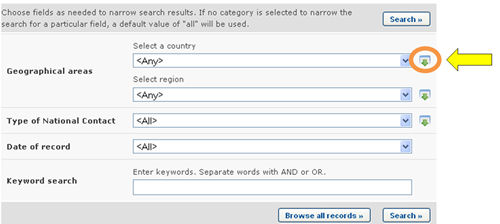
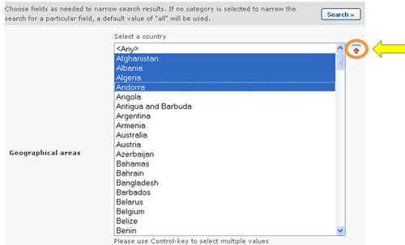
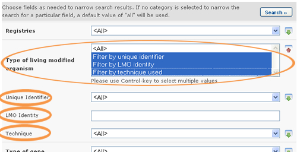

Varios campos permiten al usuario seleccionar una opción de una lista desplegable, es decir, campos de selección y campos de criterio adicional. A menudo encontrará al lado de estos campos un pequeño ícono con una flecha verde, que puede ser usado para seleccionar más de una opción de la lista desplegada.

Al hacer clic en el icono se desplegan las opciones seleccionables de la lista. Para seleccionar varias opciones, mantenga presionada la tecla Control (Ctrl) si esta usando un sistema PC o la tecla Apple si esa usando un sistema Macintosh y haga clicen las opciones que desea seleccionar.
El ícono ahora muestra una flecha roja que apunta hacia arriba, haciendo clic en ésta hara que se cierre la lista, preservando las opciones seleccionadas.

Cuando se selecciona mas de una opción en un campo de lista de selección, todos los registros correspondientes a dichas opciones seleccionadas serán incluídos en la lista de resultados. Por ejemplo, al buscar Contactos Nacionales, si dos países son seleccionados en el campo País, se mostrarán Contactos Nacionales de ambos países en los resultados, es decir, registros correspondientes al primer país y registros del segundo país.
Por otro lado, cuando se selecciona más de una opción en un campo de criterio adicional de búsqueda, varios campos nuevos aparecerán en el área de criterios de búsqueda para que el usuario complete. Por ejemplo, cuando se buscan Decisiones y otras Comunicaciones de los Países, nuevos criterios de búsqueda se pueden agregar al seleccionar varias opciones en el campo Tipo de Organismo Vivo Modificado. Por ejemplo, si las opciones “Filtrar por Identificador Exclusivo”, “Filtrar por nombre de Gen” y “Filtrar por técnica empleada” son seleccionadas, entonces tres nuevos campos aparecerán en la pantalla para que el usuario ingrese criterios de búsqueda en ellos.
